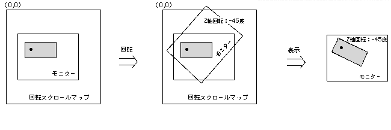

Return to previous page | Return to menu | Go to next page
void
Scroll function
Z-axis rotation of RBG
void slZrotR(angz)
ANGLE angz ;
angz Rotation angle value of rotary scroll with respect to Z axis
Rotating scroll Z-axis rotation.
The rotation axis is the Z axis (the front is the forward direction toward the screen), and the positive direction of rotation is to the right (clockwise) with respect to the axis.
None
The coordinates specified by the function “slDispCenterR” will be the rotation center of the rotary scroll (the monitor rotates relative to the scroll map).

・ Rotating scroll rotation is captured by the image of the monitor rotating relative to the scroll map.
Reference: Chapter 8 Scroll
slZrotR